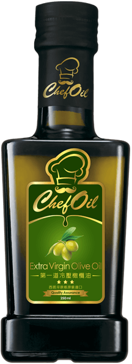
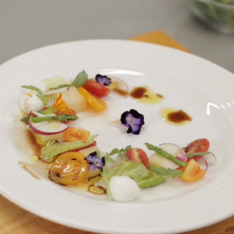
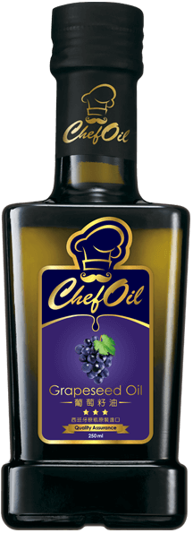
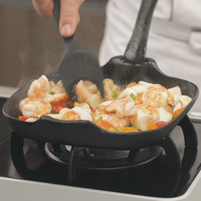
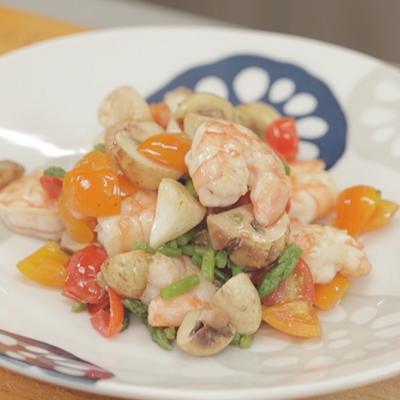
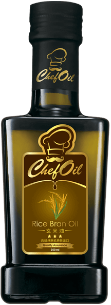
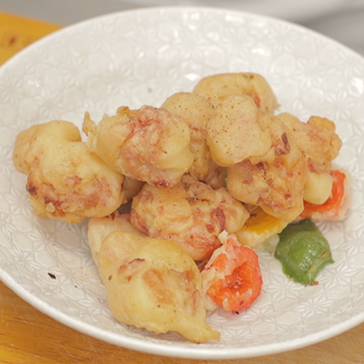

Colin 老師到你家
料理資歷7年，曾擔任各大媒體和食品公司的料理示範教師，認為：只要保有對於一切最單純的愛，忠於原味，人人都能做出一道道的美味料理！
阿嬤的紅燒獅子頭 經典再現
每個家庭，都有最家常的一道菜，是專屬於這家人記憶中的味道。對粉絲 Endo 一家人而言，以前過年過節阿嬤做的「紅燒獅子頭」就是令人懷念的味道。為了重現阿嬤的古早味，鮮少下廚的 Endo 特別向暖男主廚 Colin 老師求救。
阿爸愛的花生滷豬腳 幸福回味
倪安曾聽爸爸提起小時候親戚來家裡時，總是會帶上一鍋香噴噴的「花生滷豬腳」，那味道至今仍然難忘。為了重現爸爸記憶中幸福的味道展現孝心。
270 天釀造系列醬油

Chef Oil 第一道冷壓橄欖油
適合低溫烹調，譬如：涼拌與沾食 ( 發煙點約 110°C ) ，具有果香並富含天然橄欖多酚與酵素。

1
第一道冷壓橄欖油加上些蒜末、芥末籽醬或紅酒醋等調味，即能成為美味的萬用沙拉醬。

2
果香馥郁的第一道冷壓橄欖油，最適合清爽又健康的馬茲瑞拉番茄沙拉！

Chef Oil 葡萄籽油
適合用於中溫拌炒（發煙點約達 200°C），富含維生素 E 有助抗氧化，有接近九成的不飽和脂肪酸。

1
鮮蝦與蔬菜，煮太久反而會破壞營養，所以最適合使用葡萄籽油，保留鮮甜爽脆的口感。

2
口感滑順細緻的葡萄籽油，提升了義式鮮蝦炒菇的口感，替美味與健康加分。

Chef Oil 玄米油
油質穩定不易酸化變質，適合高溫油炸（發煙點最高可達 230°C），萃取自營養價值高的糙米胚芽，含有植物固醇與ϒ-穀維素。

1
調麵糊時可加入玄米油增加柔順感，且玄米油加熱時還能聞到淡淡的胚芽香氣。

2
營養價值高且耐高溫的玄米油，讓炸物也可以吃得美味又無負擔。